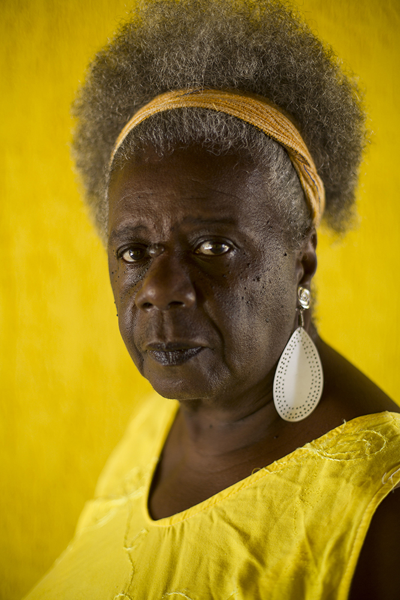
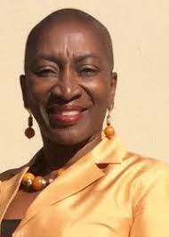

Angela Yvonne Davis (Birmingham, 26 de janeiro de 1944) é uma professora e filósofa socialista
estadunidense que alcançou notoriedade mundial na década de 1970 como integrante do Partido
Comunista dos Estados Unidos, dos Panteras Negras, por sua militância pelos direitos das
mulheres e contra a discriminação social e racial nos Estados Unidos, referência entre os
marxistas e por ser personagem de um dos mais polêmicos e famosos julgamentos criminais da
recente história dos EUA.
Conceição Evaristo
Avaliado em: 06/10/2023

Maria da Conceição Evaristo de Brito (Belo Horizonte, 29 de novembro de 1946) é uma linguista e
escritora afro-brasileira. Agora aposentada, teve uma prolífica carreira como
pesquisadora-docente universitária.É uma das mais influentes literatas do movimento
pós-modernista no Brasil, escrevendo nos gêneros da poesia, romance, conto e ensaio. Como
pesquisadora-docente, seus trabalhos focavam na literatura comparada.
Oyèrónkẹ́ Oyěwùmí
Avaliado em: 06/10/2023

Oyèrónkẹ́ Oyěwùmí (10 de novembro de 1957) é uma pesquisadora oxunista nigeriana e professora
associada de sociologia na Universidade Stony Brook. Frequentou a Universidade de Ibadan e a
Universidade da Califórnia em Berkeley. A autora estabelece duras críticas ao feminismo, em
especial em sua obra A invenção das mulheres. Sua importante contribuição no campo da sociologia
de gênero está pautada na análise da sociedade yorubá, propondo o oxunismo no lugar do feminismo
como caminho de superação dos papéis de gênero coloniais.